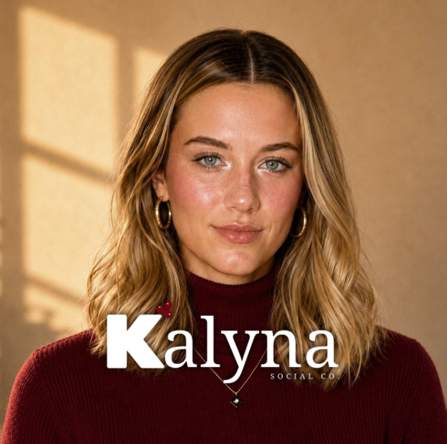

Why "Kalyna"
A berry, a symbol, a thread back home.
Kalyna, the viburnum berry, is the national symbol of Ukraine. It shows up in folk songs, embroidery, and family stories, representing home, resilience, and roots that hold even when life moves you somewhere new.
Our founder was raised by Ukrainian immigrant parents who built a life in Canada from scratch. As their first-born Canadian daughter, she grew up between two worlds, and the name Kalyna became a way of carrying that heritage forward into something new of her own.
That's the spirit behind this agency: tend something carefully, give it real structure, and it keeps growing season after season. That's what we believe good social media should do for your business too.